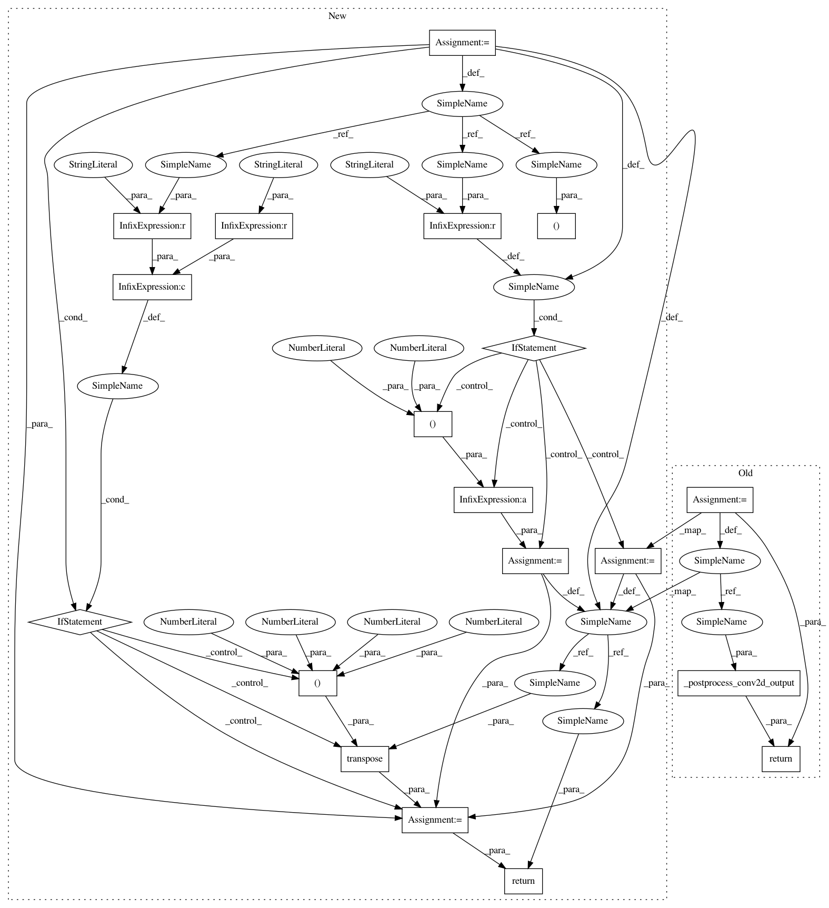

6b106ab4ec9a1c0eb3e24ae590ce63f84022ad40,keras/backend/tensorflow_backend.py,,pool2d,#Any#Any#Any#Any#Any#Any#,3466
Before Change
raise ValueError("Unknown data_format " + str(data_format))
padding = _preprocess_padding(padding)
strides = (1,) + strides + (1,)
pool_size = (1,) + pool_size + (1,)
x = _preprocess_conv2d_input(x, data_format)
if pool_mode == "max":
x = tf.nn.max_pool(x, pool_size, strides, padding=padding)
elif pool_mode == "avg":
x = tf.nn.avg_pool(x, pool_size, strides, padding=padding)
else:
raise ValueError("Invalid pooling mode:", pool_mode)
return _postprocess_conv2d_output(x, data_format)
def pool3d(x, pool_size, strides=(1, 1, 1), padding="valid",
data_format=None, pool_mode="max"):
After Change
if data_format not in {"channels_first", "channels_last"}:
raise ValueError("Unknown data_format " + str(data_format))
x, tf_data_format = _preprocess_conv2d_input(x, data_format)
padding = _preprocess_padding(padding)
if tf_data_format == "NHWC":
strides = (1,) + strides + (1,)
pool_size = (1,) + pool_size + (1,)
else:
strides = (1, 1) + strides
pool_size = (1, 1) + pool_size
if pool_mode == "max":
x = tf.nn.max_pool(x, pool_size, strides,
padding=padding,
data_format=tf_data_format)
elif pool_mode == "avg":
x = tf.nn.avg_pool(x, pool_size, strides,
padding=padding,
data_format=tf_data_format)
else:
raise ValueError("Invalid pooling mode:", pool_mode)
if data_format == "channels_first" and tf_data_format == "NHWC":
x = tf.transpose(x, (0, 3, 1, 2)) // NHWC -> NCHW
return x
def pool3d(x, pool_size, strides=(1, 1, 1), padding="valid",
data_format=None, pool_mode="max"):
In pattern: SUPERPATTERN
Frequency: 3
Non-data size: 19
Instances
Project Name: keras-team/keras
Commit Name: 6b106ab4ec9a1c0eb3e24ae590ce63f84022ad40
Time: 2017-10-16
Author: francois.chollet@gmail.com
File Name: keras/backend/tensorflow_backend.py
Class Name:
Method Name: pool2d
Project Name: keras-team/keras
Commit Name: 6b106ab4ec9a1c0eb3e24ae590ce63f84022ad40
Time: 2017-10-16
Author: francois.chollet@gmail.com
File Name: keras/backend/tensorflow_backend.py
Class Name:
Method Name: depthwise_conv2d
Project Name: keras-team/keras
Commit Name: 6b106ab4ec9a1c0eb3e24ae590ce63f84022ad40
Time: 2017-10-16
Author: francois.chollet@gmail.com
File Name: keras/backend/tensorflow_backend.py
Class Name:
Method Name: pool2d
Project Name: keras-team/keras
Commit Name: 6b106ab4ec9a1c0eb3e24ae590ce63f84022ad40
Time: 2017-10-16
Author: francois.chollet@gmail.com
File Name: keras/backend/tensorflow_backend.py
Class Name:
Method Name: separable_conv2d